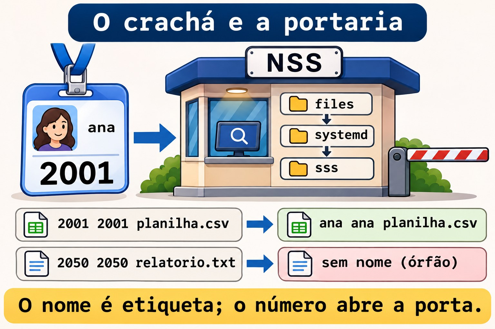
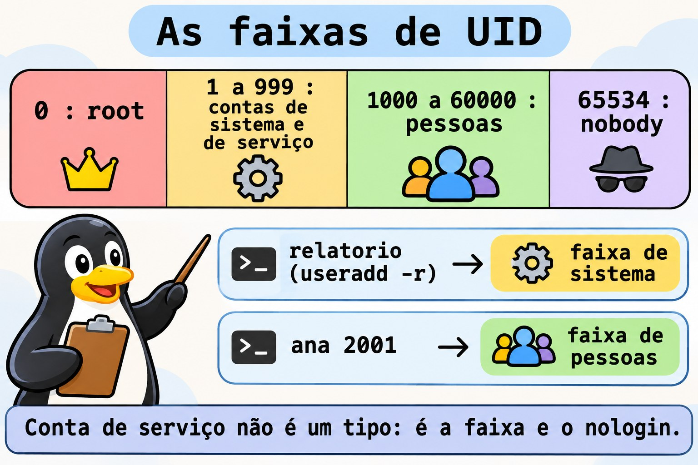
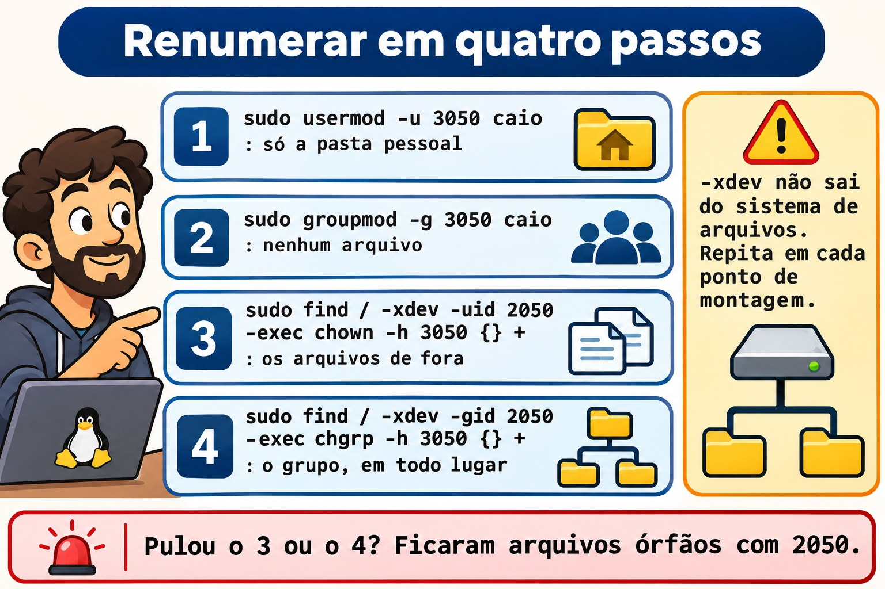

Aula 10.1 · Contas
No Windows, uma conta é um SID: você renomeia o usuário e nada quebra, porque as permissões apontam para o número, e não para o nome. No Linux é igual, só que o número se chama UID e fica à vista. Na Aula 2.6 você criou, alterou e apagou contas. Nesta aula você vê de onde o sistema tira as contas, cria contas de serviço do jeito certo, renomeia e renumera um usuário sem deixar arquivo órfão, e cria contas em lote a partir de uma lista.
Núcleo desta aula: consultar contas com
getent, que segue o/etc/nsswitch.conf; ler as faixas de UID do/etc/login.defs; criar conta de serviço comuseradd -rousystemd-sysusers; renomear comusermod -l -d -megroupmod -n; renumerar comusermod -uegroupmod -g, e consertar o resto comfind -uidefind -nouser. O resto é aprofundamento.
| Ficha | |
|---|---|
| Módulo | M10 · Usuários e acesso privilegiado, aula 1 de 4 |
| Quando | Semana 15 |
| Ao final | Você separa contas de pessoas e de serviços, muda nome e número de uma conta com segurança e acha arquivos sem dono |
| Pré-requisitos | Aulas 2.6, 8.2 e 9.6 |
| Tempo | cerca de 2h |
| Snapshots | m10a1-inicio e m10a1-fim na rocky-lab e na debian-lab |
1 · Aquecimento
Responda antes de ler.
- O
ls -lmostra2050no lugar do nome do dono. O que aconteceu com essa conta? - Um serviço novo precisa de uma conta. Ela deve ter senha? E pasta pessoal?
- A Ana virou Ana Souza e quer o login
asouza. O que muda nos arquivos dela?
2 · Por que importa
| O chamado | A resposta errada | O que ela causa |
|---|---|---|
| "Troque o login da estagiária" | vipw e trocar o nome à mão | A pasta pessoal, o grupo e o crontab ficam com o nome velho |
| "Os UIDs não batem entre os servidores" | usermod -u e pronto | Arquivos fora da pasta pessoal ficam com o número antigo, sem dono |
| "Crie uma conta para o serviço de relatórios" | useradd relatorio comum | Conta com Bash, pasta pessoal e UID de pessoa: alvo fácil |
| "Crie as 30 contas da turma nova" | 30 comandos digitados à mão | Erro de digitação, UID duplicado, uma conta esquecida |
"O id fulano funciona e o grep fulano /etc/passwd não" | Concluir que a conta não existe | A conta vem de outra fonte, como LDAP ou SSSD |
3 · Modelo mental
Pense num crachá com número. O nome no crachá (o login) é só uma etiqueta para gente ler. O que abre as portas é o número (UID e GID), gravado em cada arquivo do disco. Trocar o nome é reimprimir o crachá: as portas continuam abrindo. Trocar o número é mudar a fechadura de quem tem o crachá: cada porta que tinha o número velho precisa ser trocada também, uma por uma. E a portaria (o NSS) pode consultar mais de uma lista de crachás: o
/etc/passwd, o systemd ou um diretório da empresa.
quem pergunta quem responde (na ordem do /etc/nsswitch.conf)
id ana → NSS → files /etc/passwd, /etc/group, /etc/shadow
ls -l systemd contas dinâmicas e de fallback
getent passwd sss LDAP ou AD, via SSSD (quando existe)
o disco guarda só números: -rw-r--r-- 2001 2001 planilha.csv
o NSS traduz para nomes: -rw-r--r-- ana ana planilha.csv
sem tradução: -rw-r--r-- 2050 2050 relatorio.txt (órfão)

Ponte Windows
| No Windows | No Linux | Onde a comparação engana |
|---|---|---|
| SID | UID e GID | O UID é curto e escolhido por você; dois servidores podem dar o mesmo número a pessoas diferentes |
| Usuários locais (SAM) | /etc/passwd e /etc/shadow | São arquivos de texto: dá para ler, comparar e versionar |
| Conta de domínio (AD) | Conta vinda do SSSD, via NSS | Não aparece no /etc/passwd, só no getent |
NT SERVICE\..., contas de serviço | Contas de sistema, abaixo de 1000 | Não há tipo especial: é a faixa de UID e o shell nologin |
Rename-LocalUser | usermod -l | O Linux não move a pasta pessoal sozinho: é o -d -m |
Import-Csv e New-LocalUser | Laço while read com useradd | O Linux tem também o newusers, que lê um arquivo no formato do passwd |
4 · O essencial
Consultar pela portaria
| Quero... | Comando |
|---|---|
| Uma conta, de qualquer fonte | getent passwd ana |
| Pelo número | getent passwd 2001 |
| Só do arquivo local | getent -s files passwd ana |
| Um grupo | getent group equipe |
| As fontes configuradas | grep -E '^(passwd|group|shadow):' /etc/nsswitch.conf |
O grep no /etc/passwd só enxerga o arquivo. O getent pergunta como o sistema pergunta, na ordem do nsswitch.conf. Em servidor ligado a um domínio, só o getent mostra a verdade.
As faixas de número
| Faixa | Quem usa | Onde se define |
|---|---|---|
| 0 | root | Fixo |
| 1 a 999 | Contas de sistema e de serviço | SYS_UID_MIN e SYS_UID_MAX |
| 1000 a 60000 | Pessoas | UID_MIN e UID_MAX |
| 65534 | nobody | Fixo |
grep -E '^#?\s*(SYS_)?[UG]ID_(MIN|MAX)' /etc/login.defs

Conta de serviço
sudo useradd -r -s /usr/sbin/nologin -d /var/lib/relatorio -M -c "Relatorios" relatorio-r pega o UID da faixa de sistema e não aplica validade de senha. -M não cria pasta pessoal. nologin recusa login interativo. A conta não recebe senha: ninguém entra como ela, e o serviço roda com User=relatorio na unit.
O jeito do systemd é declarar a conta num arquivo, e o systemd-sysusers cria o que falta:
u coletor - "Coletor de metricas" /var/lib/coletor /usr/sbin/nologinO - deixa o sistema escolher o UID. Os pacotes trazem os seus arquivos em /usr/lib/sysusers.d/; os seus ficam em /etc/sysusers.d/.
Renomear: o nome muda, o número fica
sudo usermod -l caio -d /home/caio -m estag # novo login, nova pasta, move o conteúdo
sudo groupmod -n caio estag # o grupo pessoal também tem nomeO usermod -l não renomeia o que é guardado pelo nome: o crontab em /var/spool/cron/, regras do sudoers, a caixa de e-mail e scripts que citam o login.
Renumerar: o número muda, os arquivos não
| Passo | Comando | O que faz |
|---|---|---|
| 1 | sudo usermod -u 3050 caio | Muda o UID e ajusta só os arquivos dentro da pasta pessoal |
| 2 | sudo groupmod -g 3050 caio | Muda o GID do grupo; não ajusta arquivo nenhum |
| 3 | sudo find / -xdev -uid 2050 -exec chown -h 3050 {} + | Conserta os arquivos de fora |
| 4 | sudo find / -xdev -gid 2050 -exec chgrp -h 3050 {} + | Conserta o grupo, inclusive dentro da pasta pessoal |
O -xdev não sai do sistema de arquivos de partida: repita para cada ponto de montagem (/srv/app, /boot, os volumes de dados). A conta não pode ter processos rodando.


Achar órfãos
sudo find / -xdev \( -nouser -o -nogroup \) -ls 2>/dev/nullRocky × Debian
| Rocky | Debian | |
|---|---|---|
Quem escreve o nsswitch.conf | O authselect (Aula 10.2): não edite à mão | Você, direto no arquivo |
Fontes de passwd | files, systemd e, se houver SSSD, sss | files e systemd |
SYS_UID_MIN | 201, ativo no login.defs | Comentado: vale o padrão do useradd |
Senha de conta nova, antes do passwd | !! no shadow | ! no shadow |
nologin | /usr/sbin/nologin (e /sbin/nologin, o mesmo arquivo) | /usr/sbin/nologin |
| Crontab dos usuários | /var/spool/cron/NOME | /var/spool/cron/crontabs/NOME |
| Ferramenta amigável | Só useradd | adduser, que pergunta tudo (Aula 2.6) |
5 · Lab guiado
Passo 0 · Snapshots e estado. No Proxmox: qm snapshot 201 m10a1-inicio e qm snapshot 202 m10a1-inicio. Na rocky-lab, confira o que as aulas anteriores deixaram:
getent passwd ana bruno
getent group equipe
sudo ls -ld /srv/equipeA Ana (2001) e o Bruno (2002) têm que aparecer, os dois no grupo equipe (2000), e a /srv/equipe em drwxrws--T root equipe. Se a Ana sumiu da rocky-lab (uma versão antiga do desafio da 8.5 a apagava), recrie com o mesmo número:
sudo useradd -u 2001 -c "Ana Lima" -m -s /bin/bash -G equipe anaPasso 1 · A portaria.
grep -E '^(passwd|group|shadow):' /etc/nsswitch.conf
getent passwd student
getent -s files passwd student
getent passwd | wc -l
wc -l < /etc/passwdAs duas contagens costumam bater. Se o getent contar mais, há contas vindas de outra fonte. Agora peça uma conta que não está no arquivo:
getent -s files passwd nobody
getent passwd 65534Nas duas VMs o nobody está no /etc/passwd. Num sistema mínimo sem ele, o módulo systemd do NSS responderia sozinho: é para isso que ele está na lista.
Passo 2 · As faixas.
grep -E '^#?\s*(SYS_)?[UG]ID_(MIN|MAX)' /etc/login.defs
getent passwd | awk -F: '$3 >= 1000 && $3 < 60000 {print $3, $1}' | sort -n
getent passwd | awk -F: '$3 < 1000 {print $3, $1, $7}' | sort -n | headO segundo comando lista as pessoas, o terceiro as contas de sistema. Repare na última coluna do terceiro: quase todas com nologin ou false.
Passo 3 · Duas contas de serviço.
sudo useradd -r -s /usr/sbin/nologin -d /var/lib/relatorio -M -c "Relatorios" relatorio
getent passwd relatorio
sudo chage -l relatorio | head -n 3O UID sai abaixo de 1000, a pasta não existe e a senha nunca vence. Agora pelo systemd:
command -v systemd-sysusers
ls /usr/lib/sysusers.d/ | head
echo 'u coletor - "Coletor de metricas" /var/lib/coletor /usr/sbin/nologin' | sudo tee /etc/sysusers.d/coletor.conf
sudo systemd-sysusers /etc/sysusers.d/coletor.conf
getent passwd coletor
ls -ld /var/lib/coletorO ls final responde No such file or directory: o systemd-sysusers cria a conta, não a pasta. Quem cria a pasta é a unit do serviço, com StateDirectory=coletor, ou um tmpfiles.d. Rode o systemd-sysusers de novo: ele não faz nada, porque a conta já existe. É isso que permite que todo pacote declare as contas que precisa sem medo de duplicar.
Passo 4 · Renomear. Crie a conta da estagiária e um arquivo dela fora da pasta pessoal:
sudo useradd -u 2050 -c "Estagiaria" -m -s /bin/bash estag
sudo install -d -m 1777 /srv/lab101
sudo -u estag touch /srv/lab101/relatorio.txt
echo '0 8 * * 1 echo bom dia' | sudo crontab -u estag -Ela foi contratada e vai se chamar caio:
sudo usermod -l caio -d /home/caio -m estag
sudo groupmod -n caio estag
getent passwd caio
ls -ld /home/caio
ls -l /srv/lab101
sudo crontab -l -u caioA pasta mudou de nome, e o arquivo de fora aparece como caio caio: o número não mudou, e o disco só guarda o número. O crontab não aparece com o nome novo: no crontab for caio. Ele está no arquivo antigo:
sudo ls /var/spool/cron/ # Rocky
sudo ls /var/spool/cron/crontabs/ # DebianO arquivo continua com o nome estag. Mova para o nome novo e confira:
sudo mv /var/spool/cron/estag /var/spool/cron/caio # Rocky
sudo mv /var/spool/cron/crontabs/estag /var/spool/cron/crontabs/caio # Debian
sudo crontab -l -u caioPasso 5 · Renumerar. Os servidores da equipe usam a faixa 3000 para pessoas contratadas. O caio vai de 2050 para 3050:
sudo usermod -u 3050 caio
sudo groupmod -g 3050 caio
ls -ln /home/caio /srv/lab101
sudo find / -xdev \( -nouser -o -nogroup \) -ls 2>/dev/nullNa pasta pessoal, o dono virou 3050, e o grupo continua 2050: o groupmod não mexe em arquivo. Em /srv/lab101, o dono e o grupo continuam 2050: o usermod não sai da pasta pessoal. O find acha os órfãos. Conserte:
sudo find / -xdev -uid 2050 -exec chown -h 3050 {} +
sudo find / -xdev -gid 2050 -exec chgrp -h 3050 {} +
sudo find / -xdev \( -nouser -o -nogroup \) -ls 2>/dev/null
ls -l /home/caio /srv/lab101O último find volta vazio, e tudo aparece como caio caio. Se o /srv/app da 9.6 tivesse arquivos do caio, o -xdev teria pulado: lá é outro sistema de arquivos, e o find precisa rodar a partir dele também.
Passo 6 · Contas em lote. Uma lista com login, UID e nome:
printf '%s\n' 'gil:2201:Gil Prado' 'helo:2202:Helo Dias' 'ivo:2203:Ivo Matos' | sudo tee /srv/lab101/novos.txt
while IFS=: read -r nome uid gecos; do
sudo useradd -u "$uid" -c "$gecos" -m -s /bin/bash "$nome" && echo "criada: $nome"
done < /srv/lab101/novos.txt
for u in gil helo ivo; do sudo passwd -S "$u"; doneAs três contas nascem sem senha: o passwd -S mostra LK na Rocky e L no Debian. Ninguém entra até você definir uma senha, e é o estado certo para uma conta recém-criada. Rode o laço de novo: cada linha falha com user 'gil' already exists, e nada se duplica.
Passo 7 · subuid. Cada pessoa criada pelo useradd ganha também uma faixa de números extras, que os contêineres sem root (M18) vão usar:
grep -E '^(ana|caio|gil):' /etc/subuid /etc/subgidCada linha diz nome:início:quantidade, como gil:100000:65536. As faixas não se sobrepõem. Se a Ana não aparecer, ela foi criada antes de o sistema ter /etc/subuid: anote para a M18.
Passo 8 · debian-lab. Repita os passos 0 a 7. No Passo 4, use o caminho do crontab do Debian.
Decida 1
O caio vai receber a pasta de outra equipe por NFS, e lá o UID dele é 3050. Na sua máquina é 2050. O que fazer?
A) Só usermod -u 3050 caio. B) usermod -u e groupmod -g, e depois find -uid e find -gid em cada sistema de arquivos. C) Criar uma segunda conta com UID 3050.
Marque uma opção antes.
| Se você marcou | Resultado | Por quê |
|---|---|---|
| A | Pela metade | Os arquivos de fora da pasta pessoal e o grupo ficam com o número velho |
| B | Certo | Muda os números e conserta o disco inteiro |
| C | Confusão | Duas contas para a mesma pessoa, e arquivos divididos entre elas |
Para fixar: o disco guarda números. Mudou o número, conserte o disco.
Decida 2
Um serviço novo de backup precisa de conta. Qual comando?
A) useradd backupsvc. B) useradd -r -s /usr/sbin/nologin -M backupsvc. C) Rodar o serviço como root, que é mais simples.
Marque uma opção antes.
| Se você marcou | Resultado | Por quê |
|---|---|---|
| A | Fraco | UID de pessoa, Bash e pasta pessoal: quem descobrir a senha entra |
| B | Certo | Faixa de sistema, sem login e sem pasta |
| C | Perigoso | Uma falha no serviço vira o servidor inteiro |
Para fixar: serviço tem conta própria, sem login.
6 · Quebre e conserte
Quebra 1 · O número que já tem dono
sudo useradd -u 2001 -m -s /bin/bash testeSintoma: useradd: UID 2001 is not unique.
Investigação: getent passwd 2001 mostra a Ana.
Causa: cada UID pertence a uma conta só. O useradd -o permitiria duplicar, e é quase sempre um erro: as duas contas viram a mesma pessoa para o kernel.
Conserto: escolha um número livre. Para ver o próximo da faixa: getent passwd | awk -F: '$3 >= 2000 && $3 < 3000 {print $3}' | sort -n | tail -n 1.
Quebra 2 · A conta em uso
sudo systemd-run --uid=gil --unit=lab101 sleep 600
sudo usermod -l gilberto gilSintoma: usermod: user gil is currently used by process seguido de um número.
Investigação: ps -u gil -o pid,cmd mostra o sleep.
Causa: o usermod recusa mudar nome, número ou pasta de uma conta com processos, porque eles continuariam com a identidade velha.
Conserto: pare o que está rodando (sudo systemctl stop lab101, ou sudo loginctl terminate-user gil para sessões) e repita. Na vida real, isso entra na janela de manutenção. Volte o nome: sudo usermod -l gil gilberto.
Quebra 3 · O grupo que ainda é de alguém
sudo groupdel caioSintoma: groupdel: cannot remove the primary group of user 'caio'.
Investigação: id caio e getent passwd caio: o quarto campo é 3050, o GID do grupo caio.
Causa: um grupo que é o principal de alguém não pode sumir: a conta ficaria com um GID sem nome.
Conserto: apague a conta primeiro (userdel apaga o grupo pessoal junto) ou troque o grupo principal dela com usermod -g. Aqui, o grupo fica: a limpeza cuida disso.
Limpeza
sudo systemctl stop lab101 2>/dev/null
for u in caio gil helo ivo; do sudo userdel -r "$u"; done
sudo userdel relatorio
sudo userdel coletor
sudo rm /etc/sysusers.d/coletor.conf
sudo rm -r /srv/lab101
sudo find / -xdev \( -nouser -o -nogroup \) -ls 2>/dev/null
getent passwd ana brunoO userdel -r caio pode avisar caio mail spool (/var/spool/mail/caio) not found: ele não tinha e-mail, e o aviso é inofensivo. O find tem que voltar vazio, e a Ana e o Bruno continuam como estavam.
7 · Armadilhas
| Armadilha | O que acontece | Como evitar |
|---|---|---|
Conferir conta com grep /etc/passwd | Não vê contas do SSSD | getent passwd |
Editar o nsswitch.conf na Rocky | O authselect reescreve | authselect (Aula 10.2) |
usermod -l sem -d -m | A pasta continua com o nome velho | Sempre -l NOVO -d /home/NOVO -m |
| Esquecer o grupo pessoal | Login novo, grupo com nome velho | groupmod -n logo depois |
usermod -u e pronto | Arquivos de fora da pasta ficam órfãos | find -uid em cada sistema de arquivos |
find / sem -xdev | Desce no /proc e em compartilhamentos de rede | -xdev e um find por montagem |
Conta de serviço com useradd comum | Bash, pasta e senha que vence | useradd -r -s /usr/sbin/nologin -M |
useradd -o | Duas contas com o mesmo número | Nunca, salvo motivo raro e documentado |
8 · Quiz
Responda sem olhar. O gabarito está no fim da aula.
- Por que o
getent passwdpode mostrar uma conta que o/etc/passwdnão tem? - Em que faixa fica o UID de uma conta criada com
useradd -r, e por quê? - O que o
systemd-sysusersfaz se a conta já existe? - Depois de
usermod -l caio -d /home/caio -m estag, o que ainda fica com o nome velho? - Depois de
usermod -u, quais arquivos ficam com o número velho? - Para que serve o
-xdevnofindde órfãos?
9 · Cola
Para saber de cor:
| Quero... | Comando |
|---|---|
| Consultar conta | getent passwd NOME |
| Conta de serviço | sudo useradd -r -s /usr/sbin/nologin -M NOME |
| Renomear | sudo usermod -l NOVO -d /home/NOVO -m VELHO e sudo groupmod -n NOVO VELHO |
| Renumerar | sudo usermod -u NOVO NOME e sudo groupmod -g NOVO NOME |
| Consertar o disco | sudo find / -xdev -uid VELHO -exec chown -h NOVO {} + |
| Achar órfãos | sudo find / -xdev \( -nouser -o -nogroup \) -ls |
Para consultar:
| Quero... | Comando |
|---|---|
| Só o arquivo local | getent -s files passwd NOME |
| Fontes do NSS | grep -E '^(passwd|group):' /etc/nsswitch.conf |
| Faixas de UID | grep -E '^#?\s*(SYS_)?[UG]ID_(MIN|MAX)' /etc/login.defs |
| Declarar conta (systemd) | /etc/sysusers.d/NOME.conf e sudo systemd-sysusers |
| Estado da senha | sudo passwd -S NOME |
| Faixas de subuid | grep NOME /etc/subuid /etc/subgid |
Flashcards:
- UID → o número que o disco guarda.
- Login → a etiqueta que o NSS traduz.
getent→ pergunta como o sistema pergunta.useradd -r→ faixa de sistema, sem validade.- Renomear → o número fica, a pasta muda com
-d -m. - Renumerar → o disco não acompanha:
find -uid.
10 · Checklist e fechamento
- [ ] Consulto contas com
getente sei de quais fontes elas vêm - [ ] Leio as faixas de UID e separo pessoas de serviços
- [ ] Crio conta de serviço com
useradd -re comsystemd-sysusers - [ ] Renomeio uma conta com a pasta, o grupo e o crontab
- [ ] Renumero uma conta e conserto os arquivos com
find - [ ] Crio contas em lote a partir de uma lista, sem duplicar
- [ ] Deixo a Ana e o Bruno como estavam, e nenhum órfão no disco
Último exercício, sem olhar a aula: na debian-lab, crie a conta de serviço filas, sem login e sem pasta, por /etc/sysusers.d/. Confira o UID e o shell, e apague a conta e o arquivo.
Snapshot de fim (no Proxmox):
qm snapshot 201 m10a1-fim
qm snapshot 202 m10a1-fim11 · Na vida real
Missão, só leitura. Num servidor Linux que você administre (ou com autorização), rode apenas:
grep -E '^(passwd|group):' /etc/nsswitch.conf
getent passwd | awk -F: '$3 >= 1000 && $3 < 60000 {print $3, $1, $7}' | sort -n
getent passwd | awk -F: '$3 < 1000 && $7 !~ /(nologin|false)$/ {print $3, $1, $7}'
sudo find / -xdev \( -nouser -o -nogroup \) 2>/dev/null | head -n 20Perguntas para responder:
- As contas vêm só de arquivos, ou também de um domínio?
- Alguma conta de sistema tem shell de login? Ela precisa?
- Há arquivos órfãos? De que número, e de quem era esse número?
12 · Aprofundar quando quiser
man nsswitch.conf,man getent: as fontes e a ordem.man sysusers.d,man systemd-sysusers: o formato completo, com grupos (g) e membros (m).man newusers: cria contas em lote a partir de um arquivo no formato dopasswd, com senha.man login.defs: todas as faixas e padrões douseradd.
DeepTutor (http://10.1.0.149:3782, KB "Curso Linux Sysadmin"):
!explica UID, login e NSS com uma metáfora!feynman por que renumerar um usuário deixa arquivos órfãos!quiz Aula 10.1, 5 perguntas sobre contas
Gabarito comentado
Aquecimento
- A conta foi apagada ou renumerada, e o arquivo ficou com o número antigo. O NSS não acha nome para 2050, e o
lsmostra o número. - Não, e não. Conta de serviço não faz login: sem senha, com
nologine sem pasta pessoal, a não ser a pasta de dados do serviço. - Nada, se só o nome mudar: os arquivos guardam o UID. Mudam a pasta pessoal (se você usar
-d -m), o grupo pessoal (comgroupmod -n) e o que é guardado pelo nome, como o crontab.
Quiz
- Porque o
getentconsulta todas as fontes donsswitch.conf, como o SSSD e o systemd, e o arquivo é só uma delas. - Na faixa de sistema, abaixo de 1000, entre
SYS_UID_MINeSYS_UID_MAX: assim ninguém confunde a conta com uma pessoa. - Nada: ele só cria o que falta. Por isso pode rodar sempre.
- O crontab, as regras do
sudoers, a caixa de e-mail e scripts que citam o login. O grupo pessoal também, até ogroupmod -n. - Os de fora da pasta pessoal. E, depois do
groupmod -g, o grupo de todos os arquivos, inclusive dentro da pasta. - Para não sair do sistema de arquivos de partida: evita
/proc,/syse compartilhamentos de rede. Cada montagem local precisa do seu própriofind.